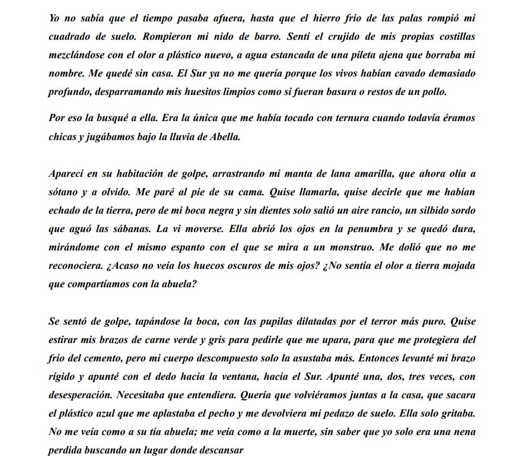
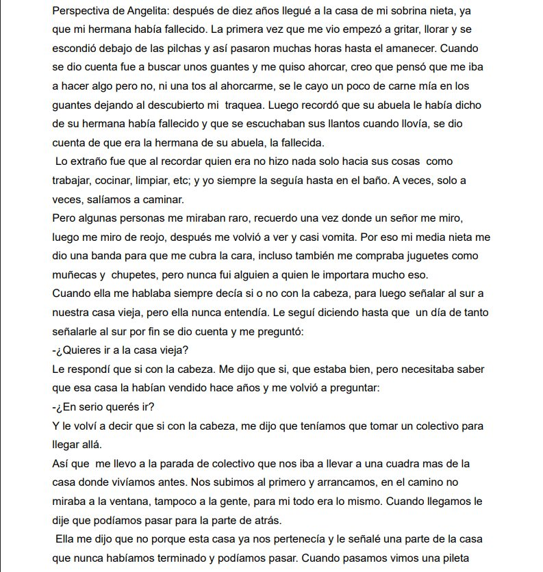
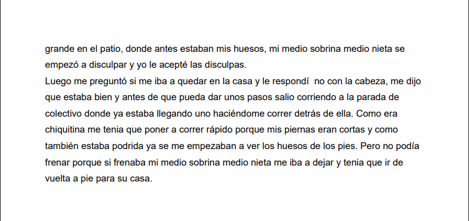
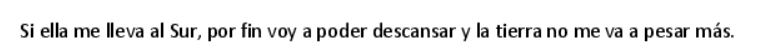
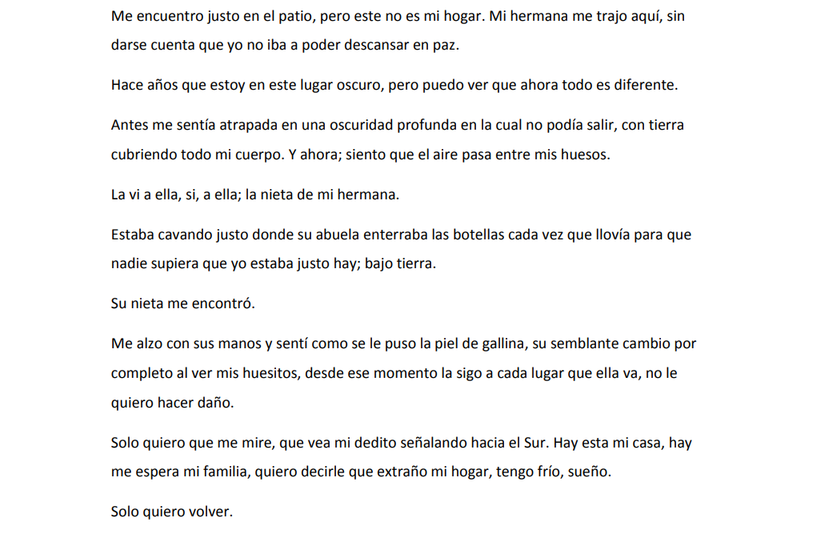
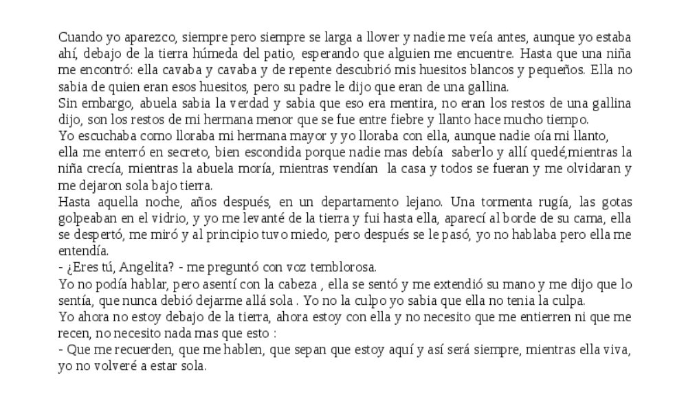
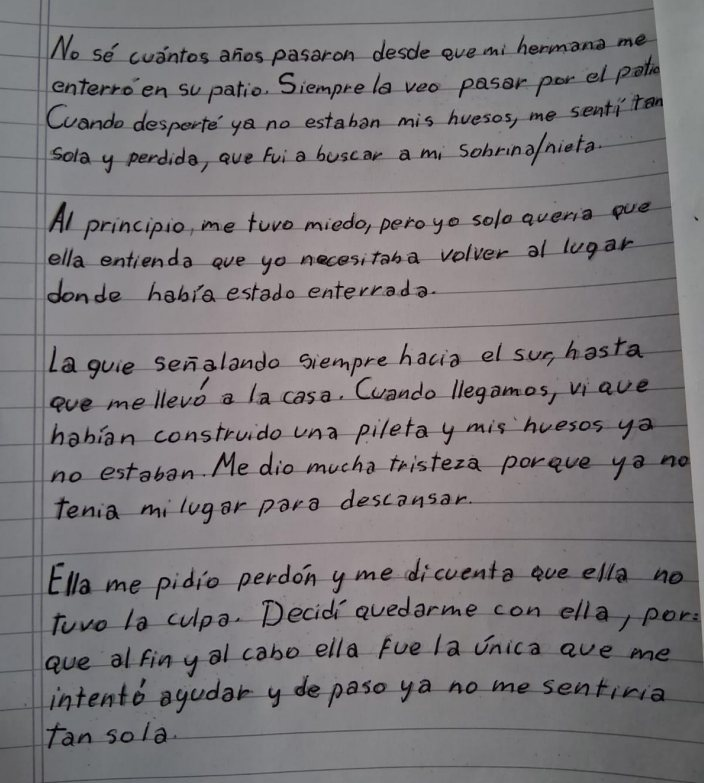
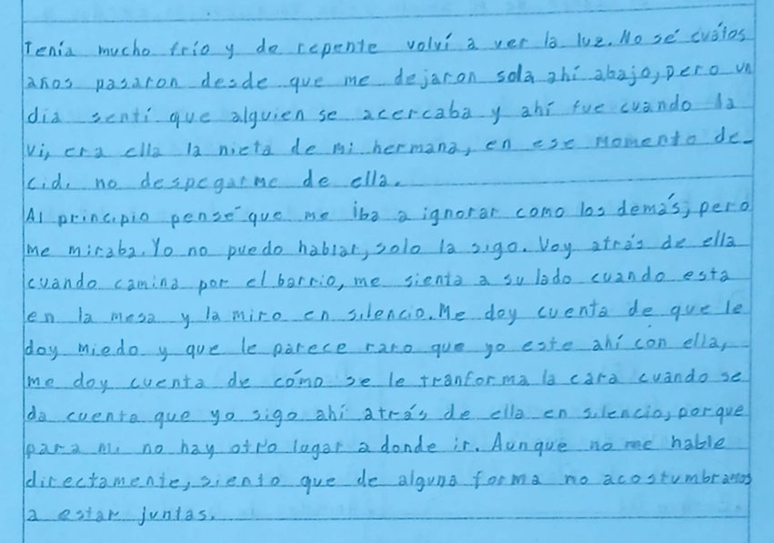

Desde la antología de escritoras latinoamericanas seleccionadas por la docente, realizamos una introducción al género fantástico de la mano de la escritora Mariana Enríquez con su cuento “El desentierro de la Angelita”.
El propósito es aprender, a través de producciones escritas, a profundizar en la importancia de lo fantástico en el mundo de la literatura.






